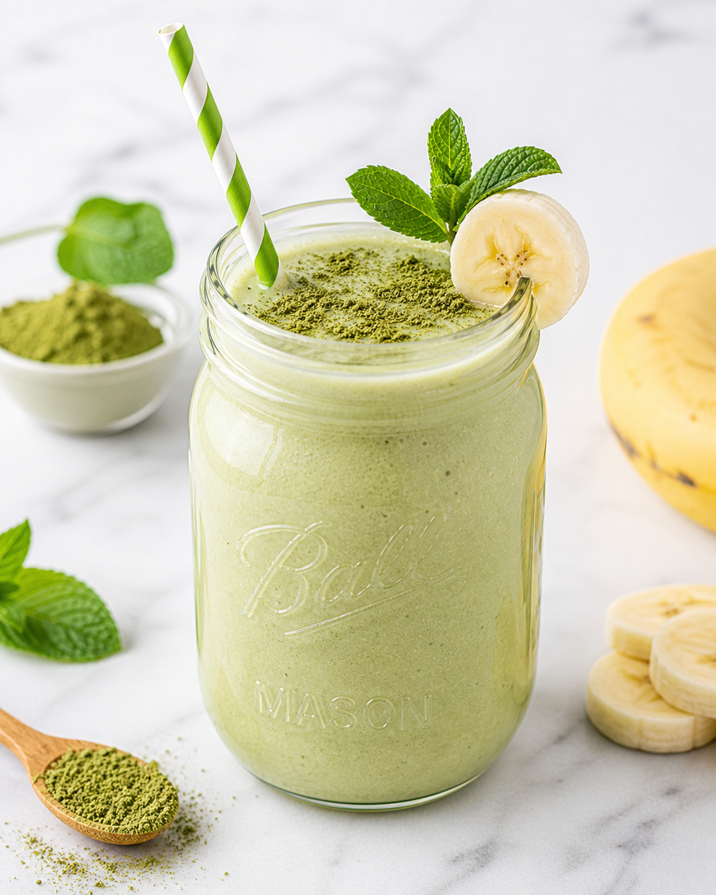

Why I Love This One
I love the quiet energy in this glass. Matcha has a soft earthiness, banana rounds the edges, and chia seeds give it enough body to keep me from wandering back to the kitchen too soon.
It also feels like a nice bridge between breakfast and a morning drink. When I do not want anything heavy, this gives me something cold, creamy, and steady.
Once the flavors are in your head, the rest is beautifully simple. Here is exactly how I make it in my own kitchen.
Here's What You'll Need
- One cup of unsweetened almond milk
- One teaspoon of ceremonial or culinary matcha powder
- One half frozen banana
- One tablespoon of chia seeds
- One quarter teaspoon of vanilla extract
- One handful of ice
- One teaspoon of maple syrup if you want it softer
I like to gather everything before I start blending, because smoothies move fast once the blender is out.
Let's Blend It Together
Pour the almond milk into the blender and add the matcha powder right on top of the liquid.
Blend for a few seconds first so the matcha dissolves and does not cling to the sides.
Add the frozen banana, chia seeds, vanilla, ice, and maple syrup if you are using it.
Blend until the smoothie looks pale green and completely creamy.
Let it sit for two minutes before drinking if you want the chia seeds to thicken the texture slightly.
Made's Tips
Blend the matcha with liquid first for the smoothest flavor.
Use a very ripe frozen banana so the smoothie tastes sweet without needing much else.
If you like a thicker texture, add another teaspoon of chia and wait a few minutes before sipping.
I hope this gives your morning a calm little glow. Love, Made